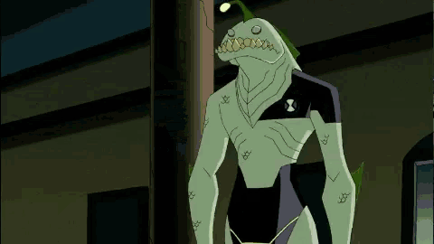

Ben 10 conta a história de Ben Tennyson, um jovem de 10 anos que descobre um dispositivo alienígena
chamado Omnitrix durante suas férias de verão. O Omnitrix lhe dá a habilidade de se transformar em
várias formas alienígenas, cada uma com habilidades únicas.
Ao longo da série, Ben e sua prima Gwen, juntamente com seu avô Max, viajam pelo país enfrentando vilões
alienígenas e humanos que buscam obter o poder do Omnitrix. Ben enfrenta desafios pessoais e aprende lições
valiosas sobre heroísmo, responsabilidade e amadurecimento.
Com o passar do tempo, Ben descobre segredos sobre o Omnitrix, como sua origem e seu verdadeiro propósito. Ele
também conhece outros portadores do Omnitrix e enfrenta ameaças mais poderosas, incluindo alienígenas malévolos
e organizações secretas.
Ao longo das várias séries e continuações da franquia, Ben cresce e amadurece, tornando-se um herói
intergaláctico reconhecido em todo o universo. Sua jornada é marcada por aventuras emocionantes, humor e ação,
conquistando fãs de todas as idades ao redor do mundo.

Site Feito por Gabriel Mello

Redes Sociais: